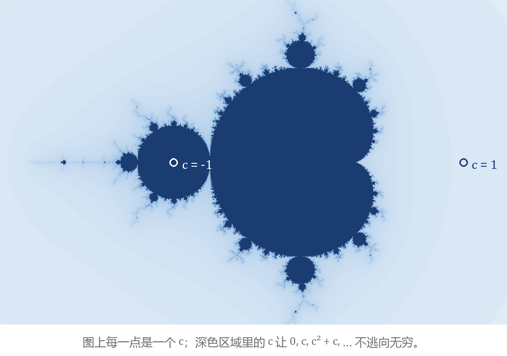
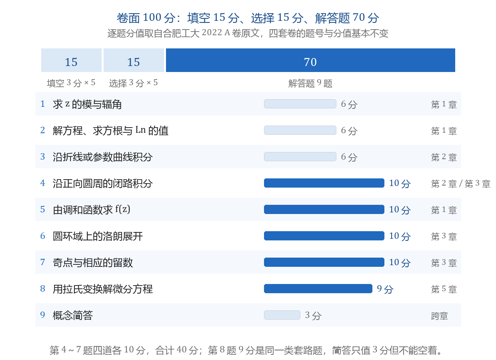

绪论：从相量到曼德博集
本节目标：能举出交流电路与分形图形的例子，并指认五章各自主考的题型。
同一个 i 的两个用处
串联电路的阻抗记成复数：Z = R + i\left(\omega L - \frac{1}{\omega C}\right)。取 R = 3\ \Omega、感抗 \omega L = 4\ \Omega、忽略容抗，得 Z = 3 + 4i，模 |Z| = 5，辐角 \arctan\frac{4}{3} \approx 0.93（弧度，约 53^\circ）。电压幅值 10\ \text{V} 时，电流幅值是 10/5 = 2\ \text{A}，相位比电压落后 0.93 弧度。相量把一路正弦量记成 U e^{i\varphi}，同频相加就变成指数运算。
另一个场景与电路无关。取一个复数 c，从 z_0 = 0 出发反复做 z_{n+1} = z_n^2 + c：
- c = 0：0, 0, 0, \dots，停在原点。
- c = -1：0, -1, 0, -1, \dots，两个数来回。
- c = 1：0, 1, 2, 5, 26, 677, \dots，几步就冲到上万。
把迭代不逃向无穷的那些 c 涂上颜色，得到下图。

assets/img/gen/绪论-分形-曼德博集迭代-本机-03.py），许可：本项目自产）两处用的是同一个 i：电路里它落在相位上，迭代里它让 c 铺满整个复平面。这门课把中间那套运算补齐——复数的四则、初等函数、解析性、积分、级数展开，最后到积分变换。
卷面 100 分怎么分
合肥工大四套公开卷的卷面同构，合计 100 分（下表按 2022 A 卷的题目归类）：
| 题型 | 题数与分值 | 合计 | 这一档考什么 |
|---|---|---|---|
| 填空 | 3 分 × 5 题 | 15 分 | 主值、级数求和、闭路积分、解析条件里的待定参数、傅里叶变换 |
| 选择 | 3 分 × 5 题 | 15 分 | 点集形状、收敛半径、可导与解析的判据、奇点类型 |
| 解答 | 6～10 分 × 9 题 | 70 分 | 九类固定计算题 |

assets/img/gen/绪论-卷面分值分布-解答题九道-本机-01.py），许可：本项目自产）这一页有两个数字要记：30 分的小题铺开在五章里，每题只考一个结论；70 分集中在九道大题上，其中第 4～8 题合计 49 分。
五章怎么串
教材五章按解题顺序排：
- 第 1 章 复变函数与解析函数：先会算复数与初等函数，再用柯西-黎曼条件判断解析性。
- 第 2 章 复变函数的积分：解析之后，闭路积分才有柯西定理与柯西公式这两条捷径。
- 第 3 章 级数与留数：一整圈积分要一笔算完，就得把函数展开成洛朗级数，取 z^{-1} 的系数算留数。
- 第 4 章 傅里叶变换：级数取极限跨到非周期函数，得到频谱与变换。
- 第 5 章 拉普拉斯变换：给傅里叶变换乘一个衰减因子，能变的工程函数一下子变多。
assets/img/gen/绪论-五章主线-题型地图-本机-02.py），许可：本项目自产）第 1 章与第 3 章合计占去一半以上的分；第 4 章一轮卷子只出 1～3 道小题；第 5 章只有 9～13 分，但那一题是整卷最靠练的一题。
分数集中在五道题
第 4～8 题合计 49 分，五道题的解法都是固定动作：
| 题 | 固定动作 | 分值 |
|---|---|---|
| 4 沿正向圆周的闭路积分 | 找围道内的奇点 → 柯西公式或留数定理 → 挑一条算完 | 10 分 |
| 5 由调和函数求 f(z) | 验调和定参数 → 用柯西-黎曼条件求另一分量 → 回写成 z 并补常数 | 8～10 分 |
| 6 圆环域上的洛朗展开 | 定环域 → 部分分式拆开 → 凑 1/(1-w) 的形状 → 写出成立范围 | 10 分 |
| 7 奇点与相应的留数 | 列出有限复平面内的奇点与阶 → 按阶选留数公式 → 逐个算 | 10 分 |
| 8 用拉氏变换解微分方程 | 变换过去 → 解出像函数 → 部分分式 → 倒查表回到 t 域 | 9～10 分 |
参考答案是逐行标分的，这五道题的每一步都对应卷面上一两分，所以练法是照着动作反复走，走到不查书。
第 9 题是概念简答：合肥工大卷给 3 分，西建大卷给到 10 分。问法固定——「解析的判别方法有哪几种」「复积分有哪些计算方法」「\sin z 与 \sin x 的性质异同」——每题写三条就给分，空着是零分。
时间按分值排
按上面的数把复习时间切三档：
- 一档（每章 26～38 分）：第 1 章与第 3 章。五道大题里四道出自这两章。
- 二档（约 20 分）：第 2 章。第 3、4 题，加上挖洞与三条路的选型。
- 三档（合计 12～22 分）：第 4、5 章。以小题为主，靠附录 B 那张表与几条性质，花的时间最少；第 5 章那 9 分要拿到。
限时卷上的作答顺序也按分值走：
- 填空与选择（30 分，一题一分钟）。
- 解答第 1～3 题（18 分，纯运算）。
- 第 4～8 题（49 分，动作题）。
- 概念简答（3～10 分，最后写，写满三条）。
一道题卡过 8 分钟就先跳过，回头再补。证明题不在本科目的范围：合肥工大四套卷的解答题全是计算题，西建大一份卷里有一道 5 分小证明（\delta 函数与 e^{-i\omega t_0} 构成傅里叶变换对），这类边角题可以放弃。
图像画廊项目
这门课配一个可视化项目「复变函数图像画廊」，四个实验课节点各推进一段：
- 实验一：复数与方根画上复平面，含本页开头那张 z^2 + c 的迭代图。
- 实验二：解析函数的模与辐角着色，非解析函数作对照。
- 实验三：保角映射的网格变形。
- 实验四：围道、极点与留数画在同一张图上。
每个概念讲完都会落成一张图；下面练习里的两条命令就是它的第一段代码。
练习：两条命令
Python 标准库 cmath 给出模与辐角主值；迭代只用到乘法与加法。跑之前先按前面的例子手算一遍。
import cmath
Z = 3 + 4j
print(abs(Z), cmath.phase(Z))
print(10 / abs(Z))
z, c = 0j, -1 + 0j
for _ in range(6):
z = z * z + c
print(z)- 第 1 条打出
5.0 0.9272952180016122：模是 5，辐角约 0.93 弧度（约 53^\circ），与相量那个例子对得上。 - 第 2 条打出
2.0：电压幅值 10 V 时电流幅值 2 A。 - 第 3 段六行输出只有
(-1+0j)与0j交替，说明 c = -1 不逃逸；把c改成1 + 1j再跑，绝对值几步就上万，那就是逃逸。在输出里指出哪个是模、哪个是辐角主值，正是解答第 1 题的识别动作。
- 李君、于非非《复变函数与积分变换》
- 合肥工业大学期末试卷（含答案与逐题分值）
- 国家高等教育智慧教育平台 · 复变函数与积分变换